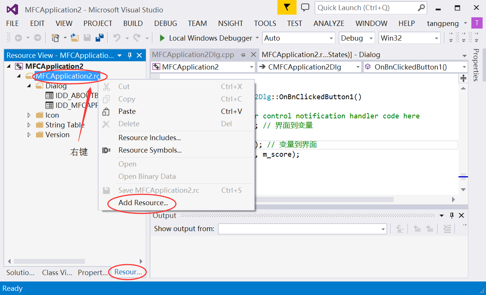
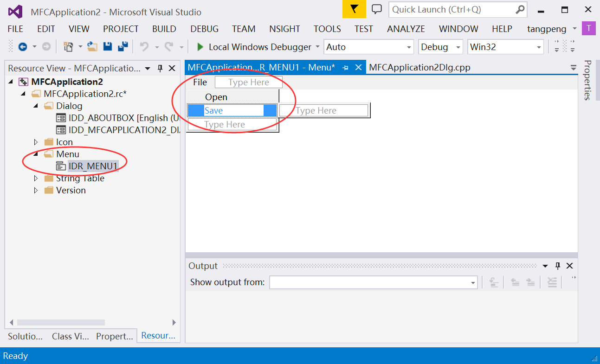
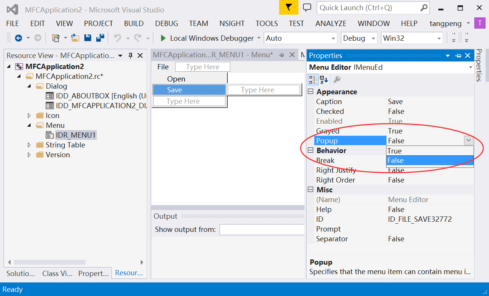
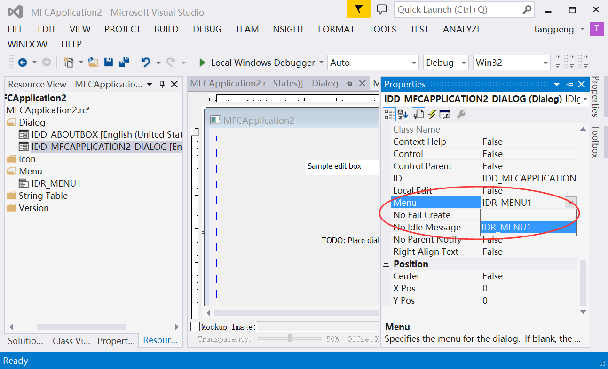

实验4. MFC综合应用
一 实验目的
- 强化C++语言的基础语法；
- 强化对C++类的关键知识点的认识，深刻体会将类作为用户自定义数据类型的思想；
- 掌握MFC的绘图操作及定时器操作；
- 了解游戏程序设计的基础过程
- 继续熟悉Visual Studio下进行C++程序开发环境和程序调试过程
二 实验内容
| 实验内容 | 说明 |
|---|---|
| 实验4-1. 基础练习 | 若干MFC基础知识的入门练习。 |
| 实验4-2. 命令行贪吃蛇 | 实现命令行模式下的贪吃蛇游戏。 |
| 实验4-3. 图形界面贪吃蛇 | 基于MFC的图形界面，可根据游戏需求扩展功能。 |
注意：实验4-2和实验4-3两个实验，选作其中一个。
三. 实验步骤
本文中的示例以Microsoft Visual Studio 2015为准，其他版本的Visual Studio使用方式类似。

实验4-1 基础练习
实验4-1a. 菜单
基于对话框（Dialog）的应用程序本没有菜单，但可以给其添加菜单。
实验步骤：
给Dialog添加菜单资源；
- 打开资源视图：菜单
视图>其他窗口>资源视图； - 在
工程名.rc上点右键，选添加资源...； - 在对话框中选
menu，然后点新建，以新建菜单。
- 打开资源视图：菜单
在菜单资源中添加
File项，并在其弹出菜单中添加Open和Save；设置Open和Save菜单项的
popup属性为false；通过设置对话框的
Menu属性，将菜单添加至对话框；给菜单项添加事件处理程序。
参见附录A1
实验结果：
- 给出程序顺序执行的截图。
- 结合实验截图，说明菜单项的
Popup属性的意义。
实验3-1b. 文件对话框
实验步骤：
在前文的事件处理程序中添加代码 在菜单项
Open的事件处理函数中添加如下代码xxxxxxxxxx21CFileDialog file_dlg(true);2file_dlg.DoModal();在菜单项
Save的事件处理函数中添加如下代码xxxxxxxxxx21CFileDialog file_dlg(false);2file_dlg.DoModal();
实验结果：
- 给出程序顺序执行的截图。
- 请结合程序说明，如何判断用户在文件对话框中是否点击了“取消”按钮？
提示：
CFileDialog是MFC的文件对话框类。以下是其使用示例。xxxxxxxxxx61CFileDialog fileDlg (TRUE);2fileDlg.DoModal() // 显示对话框，并等待用户3if( fileDlg.DoModal ()==IDOK ) { // 返回 IDOK.4CString m_strPathname = fileDlg.GetPathName(); // 文件路径5// m_title.SetWindowText(m_strPathname);6}CFileDialog的使用流程为：- 创建
CFileDialog的实例 - (可选)设置修改该实例的参数.
- 调用
CFileDialog的DoModal()函数 - 当DoModal函数返回, 调用
GetPathName()函数，获取文件路径
- 创建
其中，构造函数的第1个参数尤其重要。
构造函数第1个参数 调用DoModal函数 TRUE 显示打开文件对话框 FALSE 显示保存文件对话框
实验4-2 命令行贪吃蛇游戏
需求说明：
- 实现命令行贪吃蛇游戏，游戏界面如下图

游戏控制：用键盘控制蛇头运动方向，含上下左右共四个方向；蛇尾能够遵循蛇头运动轨迹前进； 游戏逻辑：场景中随机生成食物；蛇头迟到食物后增加得分并尾巴长长；蛇头迟到蛇身为游戏失败。 游戏过程中实时显示游戏得分。
实验步骤：
- 定义贪吃蛇游戏涉及的状态变量
- 定义基于键盘控制的游戏输入函数。
- 定义应用命令行字符输出的显示函数，其中需包含清除屏幕的操作。
- 定义游戏逻辑的函数，以根据输入更新状态变量。
- 在循环中调用游戏的输入、逻辑和绘图函数，实现游戏功能。
回答问题：
- 请绘制出程序流程示意图。
- 请给出至少4个程序执行的截图。
- 请给出游戏逻辑控制部分的的代码，并适当注释和说明。
- 请对自己的程序进行评价，指出其中优点和不足。
提示:
功能模块划分
模块 功能说明 键盘输入模块 接受键盘(或鼠标)消息
响应迅速游戏逻辑模块 根据输入，在游戏中产生相应的剧情 显示模块 将游戏内容动态的绘制到显示器
快速绘制，避免闪烁主函数(main) 在循环中完成 输入 / 逻辑 / 显示
直到 用户手动退出 或 游戏结束程序框架
xxxxxxxxxx241234// 函数声明5namespace snakegame {6void clearScreen(); // 清除屏幕中内容，以重新绘制7void setup(); // 初始化8void draw(); // 绘制每帧游戏画面9void input(); // 接受键盘输入10void logic(); // 根据输入和游戏状态，利用游戏逻辑对游戏状态进行更新11...12}13...14int main() {15snakegame::setup();16while (!snakegame::gameOver) {17snakegame::draw();18snakegame::input();19snakegame::logic();20Sleep(40);21}22system("pause");23return 0;24}键盘输入模块：按键
w、s、a和d，以控制蛇头做上下左右的移动。需调用头文件conio.h，并使用其中的函数int _kbhit(void)和int _getch(void)。xxxxxxxxxx1412void snakegame::input() {3if (_kbhit()) {4switch (_getch()) {5case 'a':6dir = LEFT;7break;8...9case 'x':10gameOver = true;11break;12}13}14}其中的
LEFT等是预先定义的常量，如：enum eDirecton {STOP = 0, LEFT, RIGHT, UP, DOWN};绘制模块：调用WindowsAPI，将光标复位以重新绘图。防止屏幕闪烁。
xxxxxxxxxx1212void snakegame::clearScreen() {3HANDLE hOut = GetStdHandle(STD_OUTPUT_HANDLE);4COORD Position = {0, 0};5SetConsoleCursorPosition(hOut, Position);6}7void snakegame::draw() {8clearScreen();9//system("cls");10...11// 请在此补充程序12}游戏逻辑模块
xxxxxxxxxx111// some global variables defined!2void snakegame::logic() {3// move the snake4... 请在此补充程序5// update head position by key-input6... 请在此补充程序7// if snake head touch border ?8... 请在此补充程序9// if snake head eat its tail ?10... 请在此补充程序11}
实验4-3 图形界面贪吃蛇游戏
需求说明：
- 基于MFC的图形化界面贪吃蛇游戏
- (可选)可增加游戏保存和载入功能，增加游戏参数配置功能
- (可选)记录前10名最高得分结果
实验步骤：
- 新建MFC的单文档程序
- 新建定义贪吃蛇的类，移植实验9-1中的游戏输入和游戏逻辑功能
- 在MFC的CView派生类中定义Timer以实现定时更新
- 在MFC的CView派生类中重载OnDraw函数，实现图形界面绘制
实验结果：
- 给出4组实验结果截图。若程序有创新或扩展，请在此说明。
- 给出你认为的(部分)核心代码，并详细注释说明功能和思路。
- 请回答本次实验的最难点是何处，是否解决，如何解决？
- 和其他同学相比，自己的工作有何独特之处？并以实例(截图、部分程序等)证明。
附录
以下示例是基于VS2013截图，其他版本VS类似。
附录4-1 基于Dialog的MFC应用窗口中添加菜单。
- 在资源视图下，右键点击
MFCApplication.rc(名字可能略有不同)，选择Add Resourse...，以打开资源添加对话框。

- 选择
Menu(菜单)，然后点击New。

- 资源视图中出现
Menu项，其中含有IDR_MENU1(名字可能略有不同)。双击可打开菜单界面，在其中添加菜单项，如图所示。

- 修改菜单项的属性。

- 特别注意
Popup属性。可选择不同值，以实验其作用。

- 将新建的菜单添加到对话框界面。需在对话框的属性栏中设置
Menu值。


- 至此菜单已经添加成功。但仍需给菜单项添加响应函数，以在菜单被选择时实现特定功能。


在向导生成的函数中添加代码。以下为弹出保存文件对话框的示例。
xxxxxxxxxx51void CMFCApplication2Dlg::OnFileSave() {2// TODO: Add your command handler code here3CFileDialog file(false);4file.DoModal();5}编译运行，测试功能。

- 点击
Save，弹出“另存为”对话框。